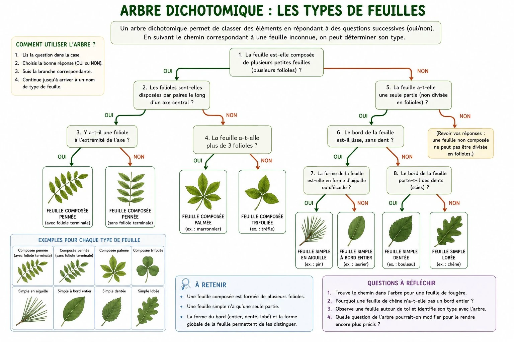

Observe bien l'arbre dichotomique ci-dessous, puis réponds aux 10 questions.
Certaines demandent de lire directement l'arbre, d'autres de réfléchir un peu plus !

📌 Garde cet arbre sous les yeux pendant tout l'exercice !
💡 Comment utiliser l'arbre ?
Lis la question dans chaque case, réponds par OUI ou NON,
puis suis la flèche correspondante jusqu'au type de feuille.
Les questions bleues lisent directement l'arbre,
les questions oranges demandent de réfléchir davantage,
les questions vertes te font suivre un chemin complet.